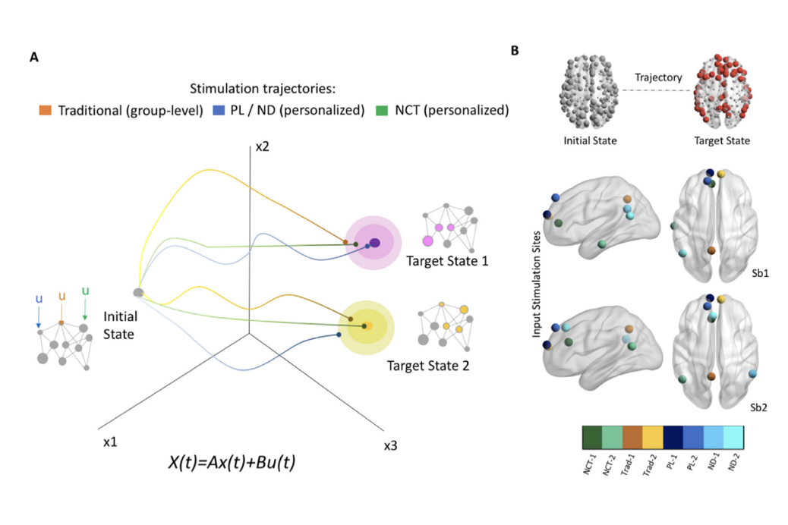

News
The latest from the Towlson Lab :)
October 2022

CONGRATULTIONS to Arianna Menardi for this long in the works, beautiful paper on using network control principles to activate subnetworks in the brain. This work has implications for the treatment of depression, schizophrenia, and Alzheimer's Disease, and highlights how crucial a personalized approach is. Check out Maximizing brain networks engagement via individualized connectome-wide target search!
Dr. Towlson representing scientists on the ultra marathon field as she completes her first 50k (with some significant elevation)!
Dr. Towlson delighted to attend a salon meeting at the Kavli Foundation in LA with other thought leaders in Network Science and Neuroscience. Hugely stimulating meeting about opportunities at the intersection of these two fast paced, innovative fields. Also managed to squeeze in a wonderful catch up with Homeward Bound friend and colleague Mary Jo Ford.
CONGRATULATIONS to Banafsheh Khazali for winning 2nd place for her poster "C. elegans control backbones and behavioral repertoires" at the Computer Science Showcase 2022!
Mapping our own social networks in class and thinking about modules, centrality, and multiplex networks.
First classes in person since the Before Times. WOW the tech has come a long way... we have "booths" with their own individually controllable screens (showing lectures/code/or student's own material) and boards!
CONGRATULATIONS to Yifan Zhang, who received multiple offers from top-tier universities for her undergraduate studies. We wish you all the best, and know you will see every success, as you embark on your degree at Williams College.
Summer student Ghadeer Abdul Hsaien completes her summer project with a poster "A Network Neuroscience Approach to Characterizing Depressive Brain States".

Swapping the office for the always gorgeous Canadian Rockies for a day.
Online for one more year, Dr. Towlson is co-chair of the Program Committee for NetSci, the flagship conference of the Network Science Society.
Dr. Towlson co-chairs the Network Neuroscience NetSci satellite this year with Danielle Marinazzo. Congrats to Xining Chen for her talk "Functional brain network connectivity changes with ovarian hormone levels".
It's great to start to see the scientific community in person again! Dr. Towlson speaking at the Turner Institute for Brain and Mental Health, Monash University - fantastic to meet Alex Fornito's group, thank you for hosting me.
We're delighted to welcome undergraduate summer students Katja Nell (Physics, UBC) and Ghadeer Abdul Hsaien (Neuroscience, UCalgary). Congratulations on your NSERC (Katja) and Alberta Innovates (Ghadeer) scholarships! Katja and Ghadeer are working on projects that characterize the emergence of depression in adolescence as detected by structural and functional brain networks.
Thrilled to announce that we secured a $250,000 New Frontiers in Research Fund (NFRF) Explorations grant! Dr. Towlson (PI) and Dr. Bray (Co-Applicant) will be launching an investigation into how the heterogenous brain network changes in preterm birth lead to a greater vulnerability to numerous mental illnesses.
New Paper out in Brain Stimulation
CONGRATULTIONS to Arianna Menardi for this long in the works, beautiful paper on using network control principles to activate subnetworks in the brain. This work has implications for the treatment of depression, schizophrenia, and Alzheimer's Disease, and highlights how crucial a personalized approach is. Check out Maximizing brain networks engagement via individualized connectome-wide target search!
Grizzly Ultra Marathon
Dr. Towlson representing scientists on the ultra marathon field as she completes her first 50k (with some significant elevation)!
Network Science Meets Neuroscience, Kavli Foundation salon
Dr. Towlson delighted to attend a salon meeting at the Kavli Foundation in LA with other thought leaders in Network Science and Neuroscience. Hugely stimulating meeting about opportunities at the intersection of these two fast paced, innovative fields. Also managed to squeeze in a wonderful catch up with Homeward Bound friend and colleague Mary Jo Ford.
September 2022
Computer Science Showcase 2022: Banafsheh Khazali
CONGRATULATIONS to Banafsheh Khazali for winning 2nd place for her poster "C. elegans control backbones and behavioral repertoires" at the Computer Science Showcase 2022!
CPSC 572/672
Mapping our own social networks in class and thinking about modules, centrality, and multiplex networks.
DATA 601
First classes in person since the Before Times. WOW the tech has come a long way... we have "booths" with their own individually controllable screens (showing lectures/code/or student's own material) and boards!
Yifan (Coco) Zhang beginning her undergraduate studies
CONGRATULATIONS to Yifan Zhang, who received multiple offers from top-tier universities for her undergraduate studies. We wish you all the best, and know you will see every success, as you embark on your degree at Williams College.
August 2022
HBI Research Day 2022
Summer student Ghadeer Abdul Hsaien completes her summer project with a poster "A Network Neuroscience Approach to Characterizing Depressive Brain States".
Prairie Mountain
Swapping the office for the always gorgeous Canadian Rockies for a day.
July 2022
NetSci 2022
Online for one more year, Dr. Towlson is co-chair of the Program Committee for NetSci, the flagship conference of the Network Science Society.
Network Neuroscience 2022
Dr. Towlson co-chairs the Network Neuroscience NetSci satellite this year with Danielle Marinazzo. Congrats to Xining Chen for her talk "Functional brain network connectivity changes with ovarian hormone levels".
OCNS 2022, Sunbelt 2022, and Monash University
It's great to start to see the scientific community in person again! Dr. Towlson speaking at the Turner Institute for Brain and Mental Health, Monash University - fantastic to meet Alex Fornito's group, thank you for hosting me.
May 2022
Welcome summer students!
We're delighted to welcome undergraduate summer students Katja Nell (Physics, UBC) and Ghadeer Abdul Hsaien (Neuroscience, UCalgary). Congratulations on your NSERC (Katja) and Alberta Innovates (Ghadeer) scholarships! Katja and Ghadeer are working on projects that characterize the emergence of depression in adolescence as detected by structural and functional brain networks.
April 2022
NFRF-E major grant success
Thrilled to announce that we secured a $250,000 New Frontiers in Research Fund (NFRF) Explorations grant! Dr. Towlson (PI) and Dr. Bray (Co-Applicant) will be launching an investigation into how the heterogenous brain network changes in preterm birth lead to a greater vulnerability to numerous mental illnesses.